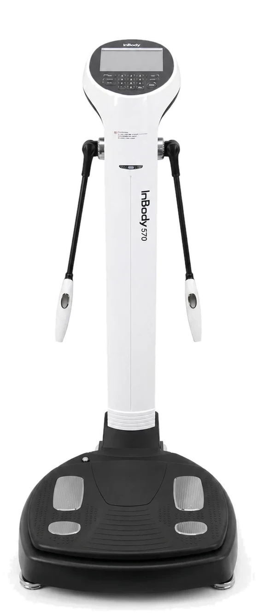
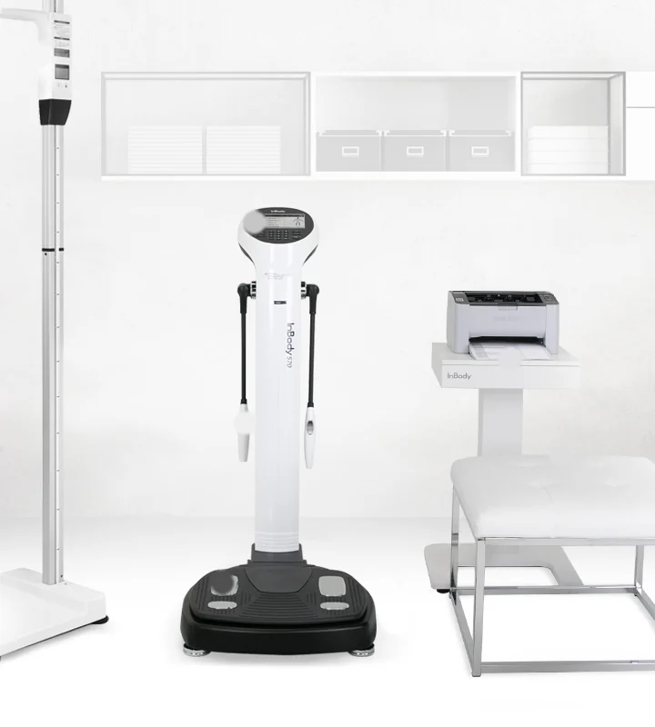

The console
Your height, age and sex go in here. The analyzer does the rest and drives the printer directly, so the sheet is ready before you step off.
A bathroom scale gives you one number and no idea what it means. The InBody 570 breaks your body down into muscle, fat, and water, limb by limb, in under a minute. Then our Vitality Body Intelligence System turns more than 30 of those biomarkers into a training program, a nutrition plan, and a physician-reviewed summary that belongs to you and to nobody else.
Weight is a single number covering four very different things: muscle, fat, water, and bone. When that number drops, the scale cannot tell you which one left. That matters enormously, because losing five pounds of fat and losing five pounds of muscle look identical on a scale and are opposite outcomes for your health.
Body mass index has the same blind spot. BMI only knows your height and your weight, so a muscular patient gets labeled overweight while a patient carrying dangerous fat around their organs can land in the normal range. Neither number tells you what to actually do differently on Monday morning.
You cannot manage what you have not measured. The InBody 570 replaces one vague number with more than thirty specific ones.
One line going down. No idea whether you are getting healthier or just smaller and weaker.
Fat down, muscle held, water balanced, and which limb is falling behind the others.
Visceral fat, the fat wrapped around your organs, which is strongly linked to cardiometabolic risk and is invisible to height and weight alone.
Your calories, your protein target, your training split, and your medication strategy stop being guesses.
You stand barefoot on the footplates and hold the hand electrodes. The InBody 570 sends a safe, very low level current through your body at three different frequencies. Muscle is full of water and conducts easily. Fat resists. By measuring how the current behaves, the analyzer separates your weight into its actual components.
Currents at 5, 50 and 500 kHz behave differently at the cell membrane, which is what makes it possible to separate water inside your cells from water outside them.
Each arm, each leg and your trunk are measured independently. Whole-body-average machines hide the imbalances that actually explain your pain and your plateaus.
Three frequencies across five segments produce fifteen separate impedance measurements every time you step on. That density is what makes the output clinically useful.
Results come from your measured impedance rather than being adjusted by age or gender assumptions, so the number you get is your body, not a demographic average.
Nothing is injected, nothing is inhaled, and there is no radiation. Most patients feel nothing at all. If you have a pacemaker or another implanted electronic medical device, tell our team before testing, because manufacturer guidance advises against use in that case.
Four electrodes under your feet, two in each hand. The current enters at one point and leaves at another, and the analyzer reads what your tissue did to it on the way through. Here is the hardware doing the work.

01 · Console 02 · Hand electrodes 03 · FootplateYour height, age and sex go in here. The analyzer does the rest and drives the printer directly, so the sheet is ready before you step off.
Palm on the grip, thumb on the oval sensor. Two contacts per hand, one sending current and one reading voltage, which is what makes each arm measurable on its own.
Heels on the back pads, forefoot on the front pads. Four separate electrodes are why your left leg and right leg come back as two different numbers instead of an average.

Hand electrodes Foot electrodesNo gown, no blood draw, no waiting on a lab. You step on, you step off, and the conversation about what to do next starts while the sheet is still warm.
These are the headline metrics on your printed results sheet. Every one of them feeds directly into what we ask you to eat, lift, and monitor.
Most clinics glance at body fat percentage and move on. We pull the entire data set into VBIS, because the interesting answers usually live in the columns nobody reads.
On top of the scan itself, VBIS also reads your clinical profile: age, sex, height, medications including GLP-1 dose and duration, training history, injury history, sleep, schedule, and food preferences.
Plenty of gyms in Las Vegas will hand you an InBody printout and wish you luck. That printout is data, not direction. VBIS is the system we built to close that gap: it takes every biomarker from your scan, layers your clinical profile on top, and produces a program that could not have been written for anyone else.
Your InBody 570 scan is recorded in full, all thirty-plus biomarkers, not just the summary line. Prior scans are pulled in alongside it.
VBIS reads the relationships between markers: lean mass against BMR, visceral fat against trunk composition, left against right, this month against last.
Calories and protein come off your measured lean mass and BMR. Your training block is written to attack the segments the scan flagged, at a volume your history can absorb.
Your physician reviews the output and signs off. At the next scan the loop reruns, and anything that is not working gets changed rather than repeated.
A plain-English, one-look read on where your body actually is right now, written for you rather than for a chart.
Calorie and macro targets derived from your measured metabolism, not from a chart on the wall.
A workout written from your segmental results, so the work goes where your body is actually behind.
The InBody prints a full page of results before you leave the room. VBIS turns that page into three or four specific instructions for the next thirty days. Here is the shape of it.
Every patient gets the same rigor and a completely different output. Two people with the same weight, the same age and the same goal routinely leave with different calorie targets, different protein floors and different training splits, because their scans were not the same.
Semaglutide and tirzepatide work. That is exactly why body composition testing stopped being optional. Rapid weight loss can carry a meaningful amount of lean mass out with the fat, and muscle is the tissue that holds your metabolic rate up. Lose too much of it and you arrive at your goal weight with a slower engine and a much higher chance of regaining everything.
A scale cannot see any of this happening. The InBody can, month by month, while there is still time to raise protein, add resistance training, or adjust the pace. This is the difference between a medication and a program, and it is the reason we scan on a schedule rather than once at the beginning.
GLP-1 is not the answer. It is a tool, not a solution. The scan is how we make sure the tool is building the body you actually want.
A single scan tells us where you are standing. The value compounds when we scan again, because the direction and the speed of change are what tell us whether to hold the plan or rebuild it. We scan monthly, quarterly, or as often as your situation calls for.
Your starting composition, your real metabolic rate, and the first version of your plan. Everything after this is measured against it.
During weight loss we rescan monthly. Muscle held or muscle lost is the question, and a month is long enough to answer it and short enough to still fix it.
Dose changes, plateaus, an injury, a new training block or a stretch of travel all earn an extra scan. We would rather measure than assume.
Once you are holding your result, quarterly scans protect it. Muscle loss in maintenance is quiet and slow, which is exactly why it needs measuring.
Fat down, muscle flat or up, visceral trending down. We keep the plan and raise the training load on schedule.
Nothing moving in either direction. We look at adherence, water, sleep and BMR drift before touching anything else.
Weight down but lean mass falling with it. This is the pivot that matters most, and it triggers a conversation about protein, resistance work and pace.
Under a minute of standing on the device. You step on barefoot, hold the hand electrodes, keep still, and the analyzer completes all fifteen impedance measurements. Your full results sheet prints immediately, and we go through it with you before you leave.
At Vitality your first InBody 570 scan is complimentary as a new patient, with no purchase required and no obligation to start a program. Patients in a Vitality Program are rescanned on a schedule as part of their plan. Book online through our new-patient intake, or call (702) 602-5002.
The InBody 570 uses a very low level electrical current that most people cannot feel at all. There is no radiation, no needles, no dye and no water tank. If you have a pacemaker or another implanted electronic medical device, tell our team before testing, because manufacturer guidance advises against use in that situation. Let us know if you are pregnant as well and we will plan your monitoring around it.
A scale reports one number and cannot tell you whether the pound you lost was fat, muscle or water. The InBody 570 separates your weight into fat mass, skeletal muscle mass, dry lean mass and body water, and reports muscle and fat for each arm, each leg and your trunk individually. That is the difference between knowing you are lighter and knowing you are better.
The InBody 570 reports a basal metabolic rate calculated from your measured lean body mass, which is the tissue responsible for most of your daily calorie burn. It is a calculation built on direct measurement rather than an indirect calorimetry breath test, and it is what we use to set your daily calorie and protein targets. If you searched for RMR testing or metabolic testing in Las Vegas, this is the number most people are after: a metabolic rate anchored to your own lean mass rather than a formula built on height and weight, and it updates every time your body changes.
Most patients rescan monthly during active weight loss and quarterly once they are maintaining. Patients on GLP-1 therapy, patients starting a new training block, and patients whose numbers are moving in an unexpected direction are often scanned more frequently. The cadence is a clinical decision, not a fixed rule.
Come on an empty stomach when you can, skip exercise and alcohol beforehand, use the restroom first, and remove shoes, socks, heavy jewelry and outerwear. Try to test at roughly the same time of day on every visit. Consistency matters more than perfection, because the comparison between scans is where the real information lives.
The Vitality Body Intelligence System is our internal process for turning a scan into a program. It reads every biomarker from your InBody 570 results together with your clinical profile, then produces three things: an executive summary in plain English, a nutrition prescription anchored to your measured metabolism, and a training program written around your segmental results. A physician reviews the output before it becomes your plan.
The scan is part of our clinical intake and our ongoing monitoring, so it is performed as part of a visit with our team at our Las Vegas clinic on Brent Thurman Way. Your first visit as a new patient includes the scan at no cost. Start the three-minute online intake and we will schedule you, or call (702) 602-5002 and we will walk you through exactly what a first visit looks like.
One minute on the InBody 570 and you will know your muscle, your fat, your visceral fat and your real metabolic rate. Then VBIS turns all of it into a plan built for your body and nobody else's. Your first scan is complimentary as a new patient, with no purchase required. Book online in about three minutes, or call and we will find you a time.